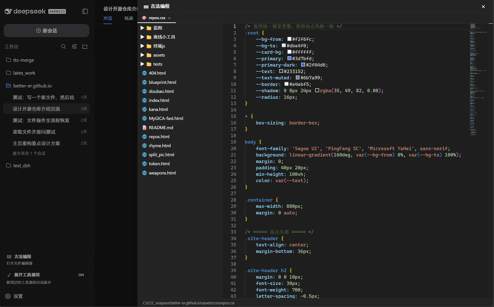
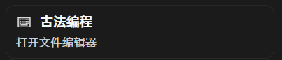
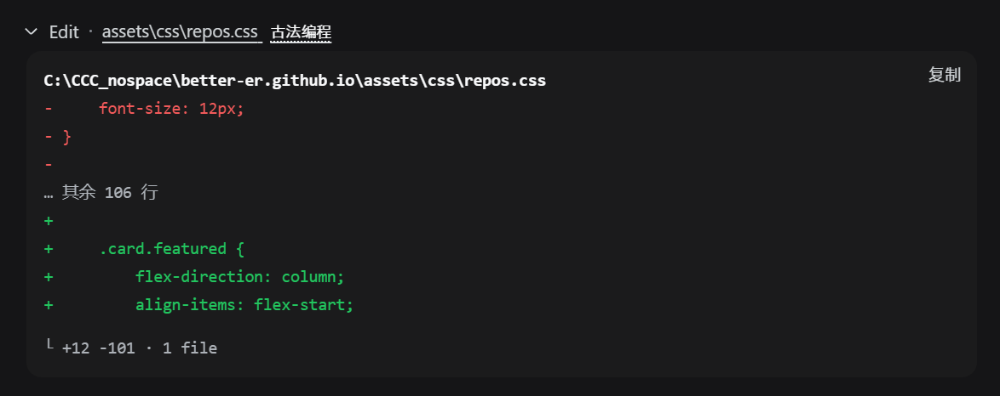
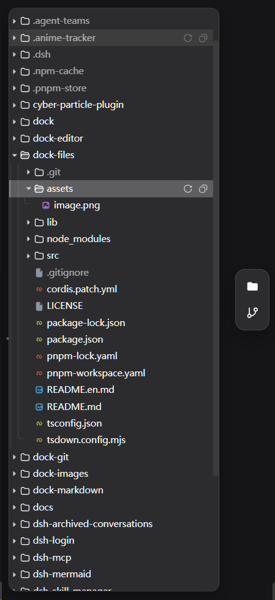
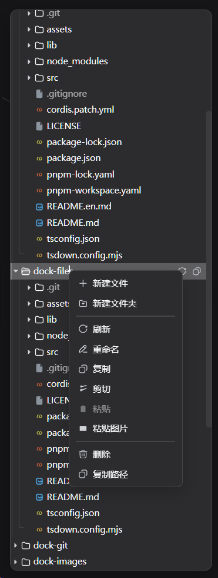
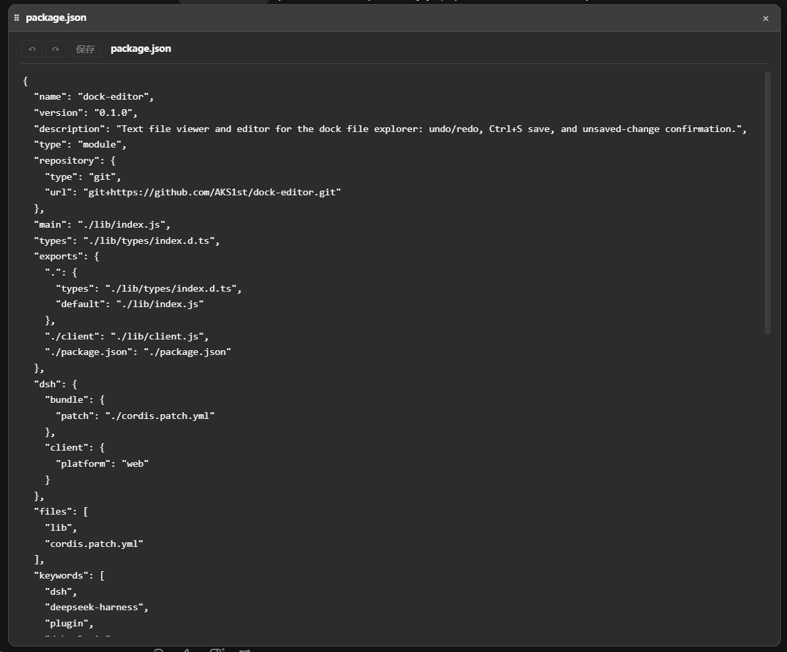
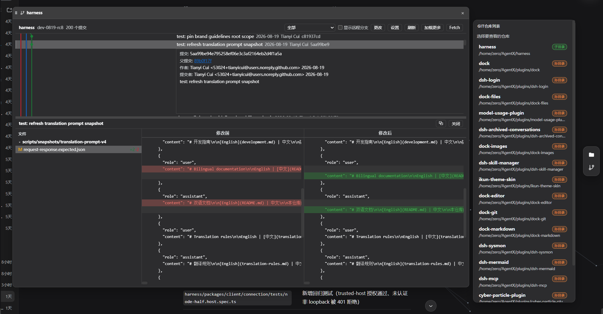

Ви переїжджаєте з консолі VS Code у DeepSeek Harness Web GUI. Нижче — три реальні способи закрити
прогалину «редактор коду + файлове дерево + git у GUI». Усі скріншоти взяті з README відповідних
репозиторіїв на GitHub і завантажені локально (img/); жодних вигаданих посилань.
У веб-розмові DSH праворуч виїжджає панель з Monaco-редактором (той самий рушій, що у VS Code) і лінивим деревом файлів — локальний воркспейс можна редагувати прямо в діалозі, без зовнішнього редактора.



Ctrl+S..git, node_modules тощо.dsh plugin --profile web add github:better-er/dsh-classic-coding.
VS Code-подібний шел для DSH Web: activity bar, side bar, зона редактора з вкладками, панель і статус-бар
(плагін dock), у який «втикуються» функціональні плагіни: файлове дерево, текстовий редактор, git-граф.




dock — чистий шел; +files, +editor, +git — за потребою).Ctrl+F/H пошук-заміна у стилі VS Code (окремий спливний шар), підтвердження незбережених змін, детект бінарних файлів.ctx.workbench — екосистема розширюється (dock-images, dock-markdown та ін.).git у PATH.Повний workbench одним форком dsh-better-sidebar: explorer, редактор, справжній термінал (xterm.js + node-pty), Git-панель, вбудований браузер, фонові задачі та подвійні робочі області зі split-панелями — у VS Code-подібній оболонці з 48px верхньою панеллю та activity rail.
README.md та англійську README_EN.md) —
вигляд інтерфейсу неможливо оцінити без встановлення, тому ця секція без зображень.
terminal_* тули для моделі).ctx.betterSidebar (registerTab / registerFileViewer) для сторонніх плагінів.@all3cn), src/ і lib/ синхронізуються вручну і «навмисно роз'їхались» (за README: рантайм керується з lib/) — ризик супроводу.0.1.1-rc.2; документація переважно китайською.| Критерій | 1 · dsh-classic-coding | 2 · dock-серія | 3 · better-sidebar-N23 |
|---|---|---|---|
| Вага втручання в GUI | Мінімальна — кнопка + overlay-панель над розмовою | Висока — повний workbench-шел, але модульний (ставиться частинами) | Максимальна — перебудова всього шелу одним монолітом |
| Редактор коду | ✔ Monaco (рушій VS Code), вкладки, Ctrl+S | ✔ CodeMirror 6, пошук/заміна як у VS Code, ліміт 256 KiB | ✔ CodeMirror + прев'ю PDF/Office/зображень |
| Файлове дерево | ✔ ліниве, читання/редагування | ✔ повні файлові операції, drag&drop, буфер обміну, центр передач | ✔ explorer з лінивим деревом і прев'ю |
| Git у GUI | ✘ | ✔ граф комітів, гілки/теги, stage/commit/push, remote, reset/revert | ✔ diff-таби, історія, stage/commit/revert |
| Термінал | ✘ | ✘ | ✔ справжній shell (xterm.js + node-pty) |
| Вбудований браузер / задачі | ✘ | ✘ (лише viewer-плагіни) | ✔ браузер-таби + сторінка фонових задач |
| Близькість до VS Code | Середня: сам редактор — рушій VS Code, але без IDE-оболонки | Найближча: activity bar / side bar / вкладки / статус-бар / git-граф — свідомо VS Code-подібні | Висока за набором можливостей, але власна реалізація шелу (fork dsh-better-sidebar) |
| Кількість плагінів | 1 | 1–6 за потребою | 1 |
| Скріншоти/демо в README | ✔ 3 скріншоти + демо-відео 42 с | ✔ 4 скріншоти в підплагінів (у базового dock — немає) | ✘ скріншотів у README немає |